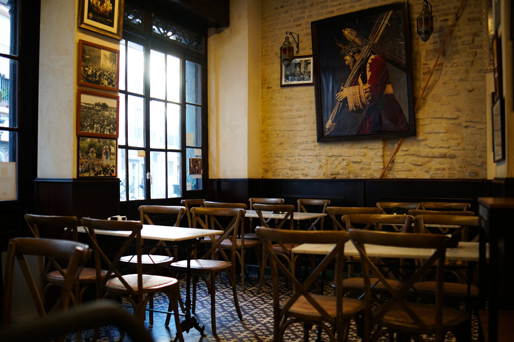
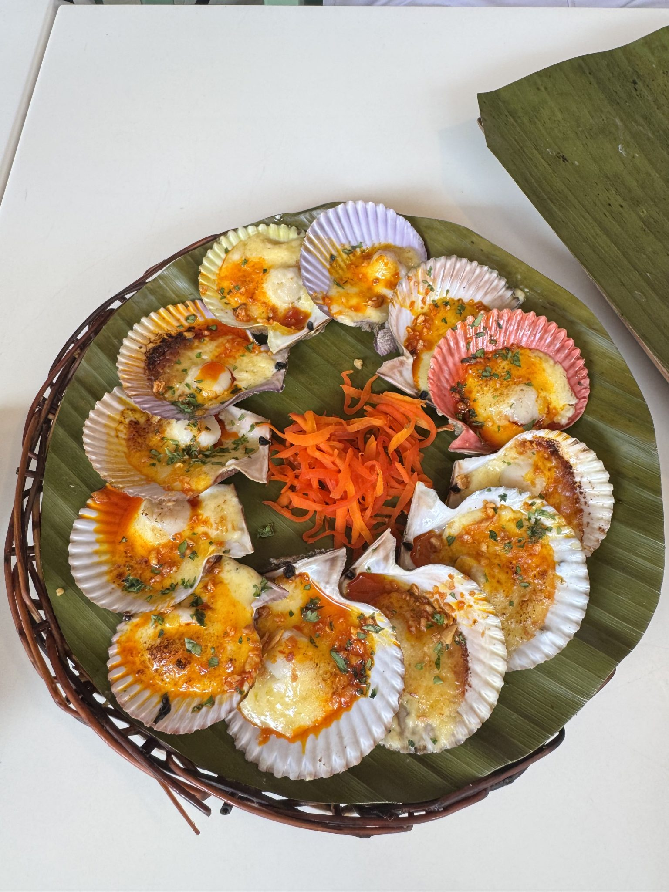
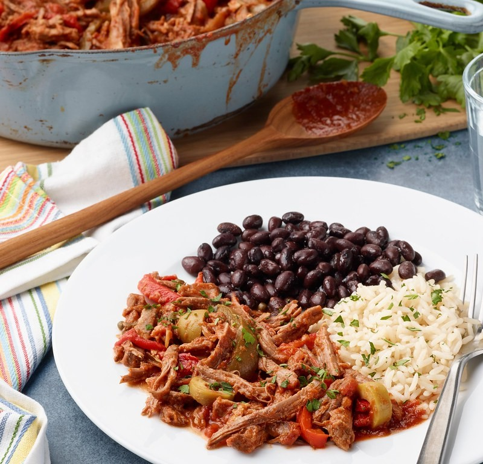
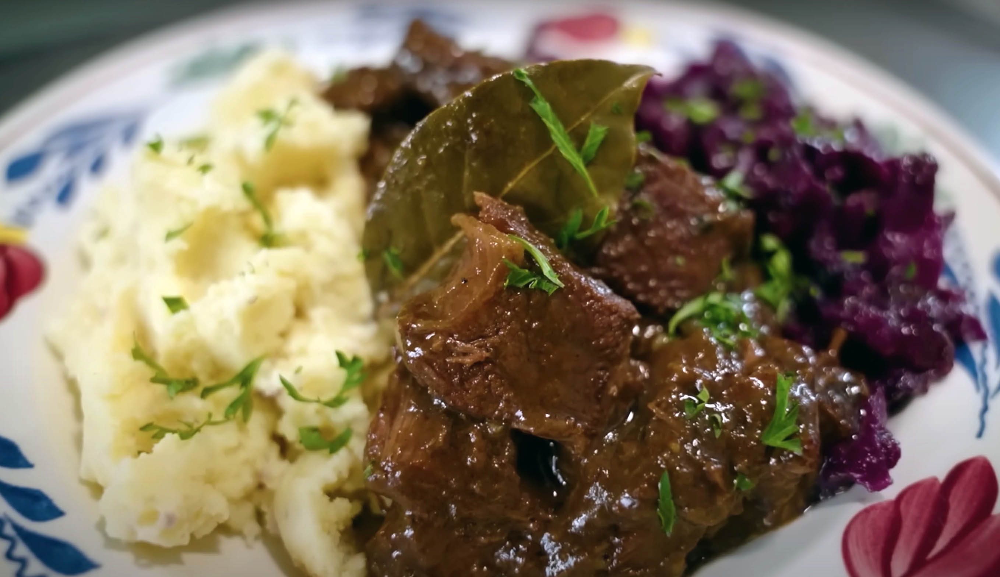
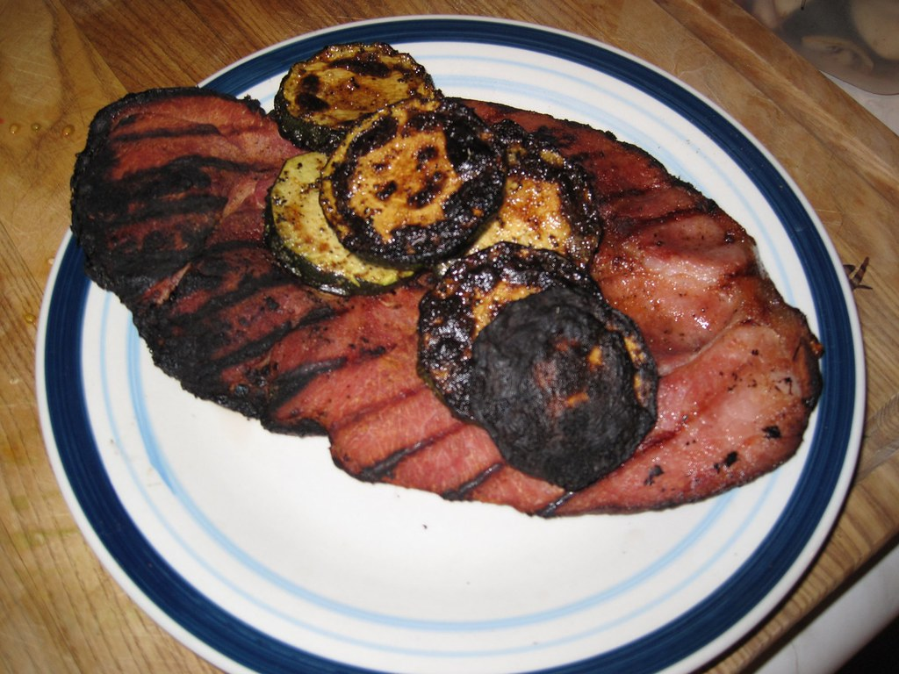
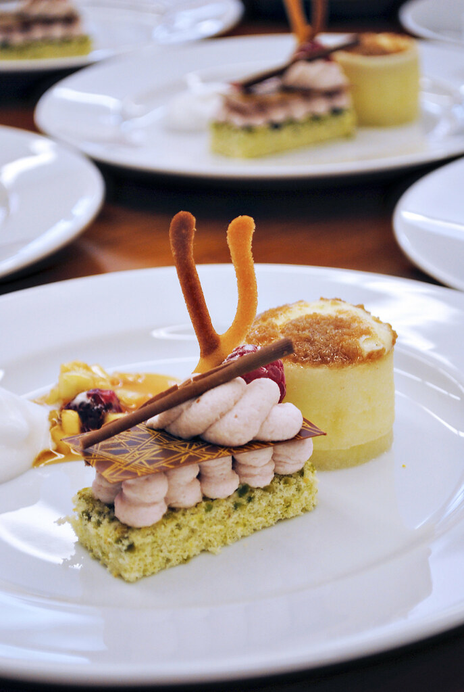
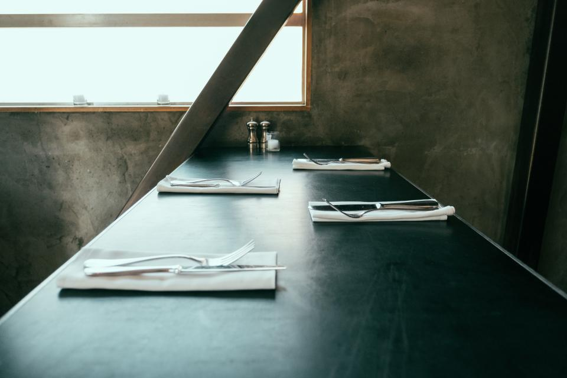
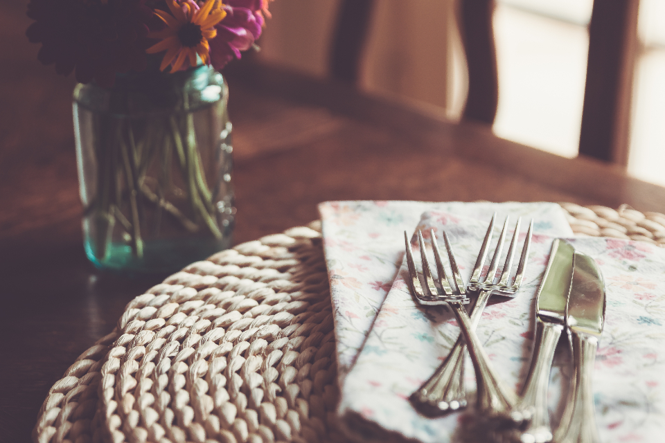

新潟県佐渡市千種 — 欧風食堂
細い路地の先に、
佐渡の夜を彩る欧風食堂。
素材を生かした、濃すぎない味わい。木のぬくもりある店内で、ゆっくりとした時間を。
店主のこと
木のぬくもりの中で、
佐渡の食材と向き合う
佐渡市千種、少し分かりにくい路地の奥に、小さな灯りをともしています。店内は木のぬくもりを感じる造りで、扉を開けた瞬間からほっと肩の力が抜けるような空間を心がけました。
料理は、素材そのものの味を生かすことを一番に、濃すぎない味付けで仕上げています。デザートには地元佐渡の食材を取り入れ、旅の締めくくりにも、日々のひと皿にも寄り添う一品を用意しています。
メニューについては、私自身が食材や調理のことをひとつひとつご説明しながらお出しするようにしています。旅の途中でふらりと立ち寄ってくださったお客様も、火曜日に訪れてくださったお客様も、これまで変わらず温かくお迎えしてきました。営業日・営業時間の詳細は、お手数ですがお電話にてお気軽にお問い合わせください。

こだわりの一皿
素材を生かした、濃すぎない味わい

ホタテのガーリック焼き
ガーリックの風味をしっかりと感じながらも、香りが強すぎない絶妙な塩梅に仕上げました。ホタテ本来の甘みを引き立てる一皿です。

トマトソース煮込み肉料理
じっくりと煮込み、ほろほろとほどけるやわらかさに仕上げました。トマトの酸味と旨みが、素材の味を引き立てます。

和牛の赤ワイン煮込み
あるお客様からは「信じられないほど美味しい」というお声もいただきました。佐渡での夜ごはんに迷ったら、選んでいただきたい一皿です。

ポークグリル
ほろほろとほどける食感が好評のポークグリル。旅の途中で急に立ち寄られたお客様にも、できる限り丁寧にお応えしています。
メニューの詳細はお電話でお気軽にどうぞ。0259-58-7427

DINNER COURSE
4000円のディナーコース
ディナーは、4000円のコースと、アラカルトメニューからお好みで選んでいただけます。あるお客様からは「味も量もとても良いのに価格が意外にも安い」というお声もいただきました。
コースの締めくくりには、地元佐渡の食材を取り入れたデザート盛り合わせをご用意。日によっては、ちょっとしたサービスをお付けすることもあります。
ランチ営業も行っております。営業時間の詳細は、店舗へお気軽にお問い合わせください。
コースのご予約はお電話で 0259-58-7427店内の雰囲気
隠れ家のような、落ち着いた店内で
狭い道の先にあり、初めての方には少し分かりにくい立地です。あるお客様からは、それこそが「隠れ家感があってとても良かった」というお声もいただきました。店内は清潔感があり、木のぬくもりを大切にした落ち着いた空間です。ゆっくりと会話を楽しみながら、お食事の時間をお過ごしください。



お客様の声
佐渡を訪れた方々からの声
コースもアラカルトも、素材を生かした濃すぎない味付け。デザート盛り合わせも好評でした。
木のぬくもりを感じる素敵な店内で、料理の美味しさに感動しました。
狭い道の先にある、隠れ家のようなお店。火曜日にお邪魔しましたが、温かく迎え入れていただきました。ホタテのガーリック焼きとトマトソース煮込みが絶品で、4000円のコースの内容にも満足でした。
落ち着いた雰囲気の中、ゆっくりとお食事を楽しめました。和牛の赤ワイン煮込みが信じられないほど美味しく、佐渡で夜ごはんに迷ったらここ、と思えるお店です。
ACCESS
佐渡市千種の路地裏へ
- 住所
- 新潟県佐渡市千種
(詳細な場所は下記の地図よりご確認ください) - 電話
- 0259-58-7427(タップで発信)
- 営業時間・定休日
- 営業時間・定休日の詳細は、店舗へお気軽にお問い合わせください。
- @kuboya_official を見る
狭い道に面した、少し分かりにくい立地です。迷われた際はお気軽にお電話ください。
電話で予約する 0259-58-7427